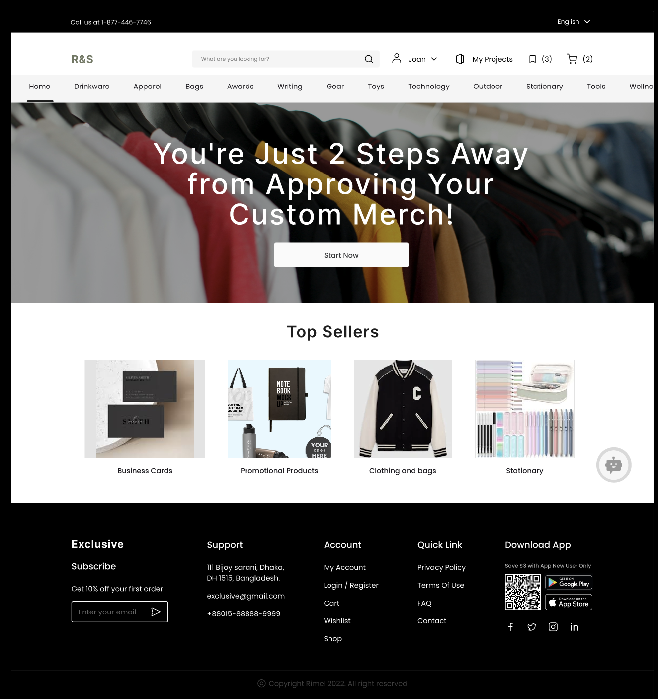
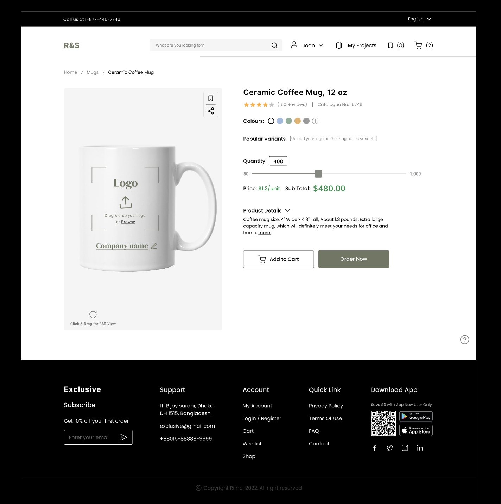
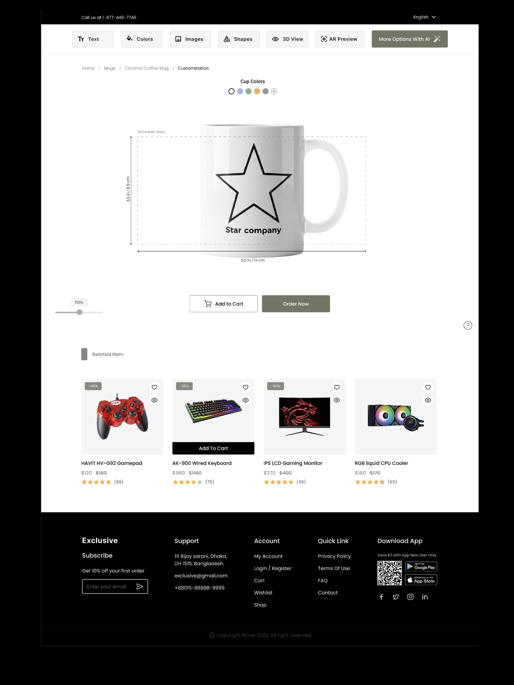
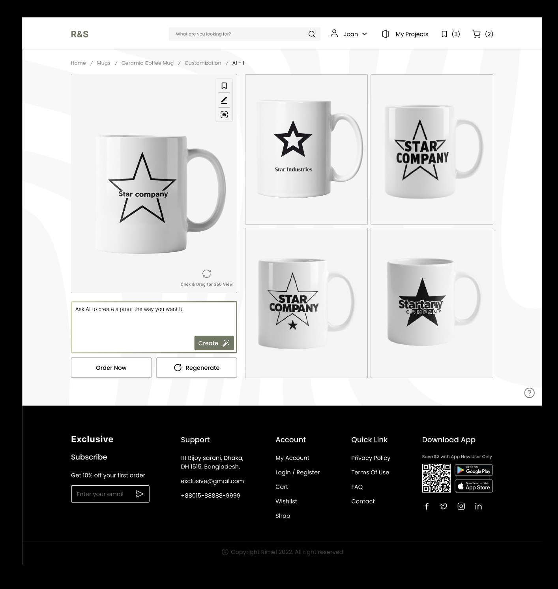
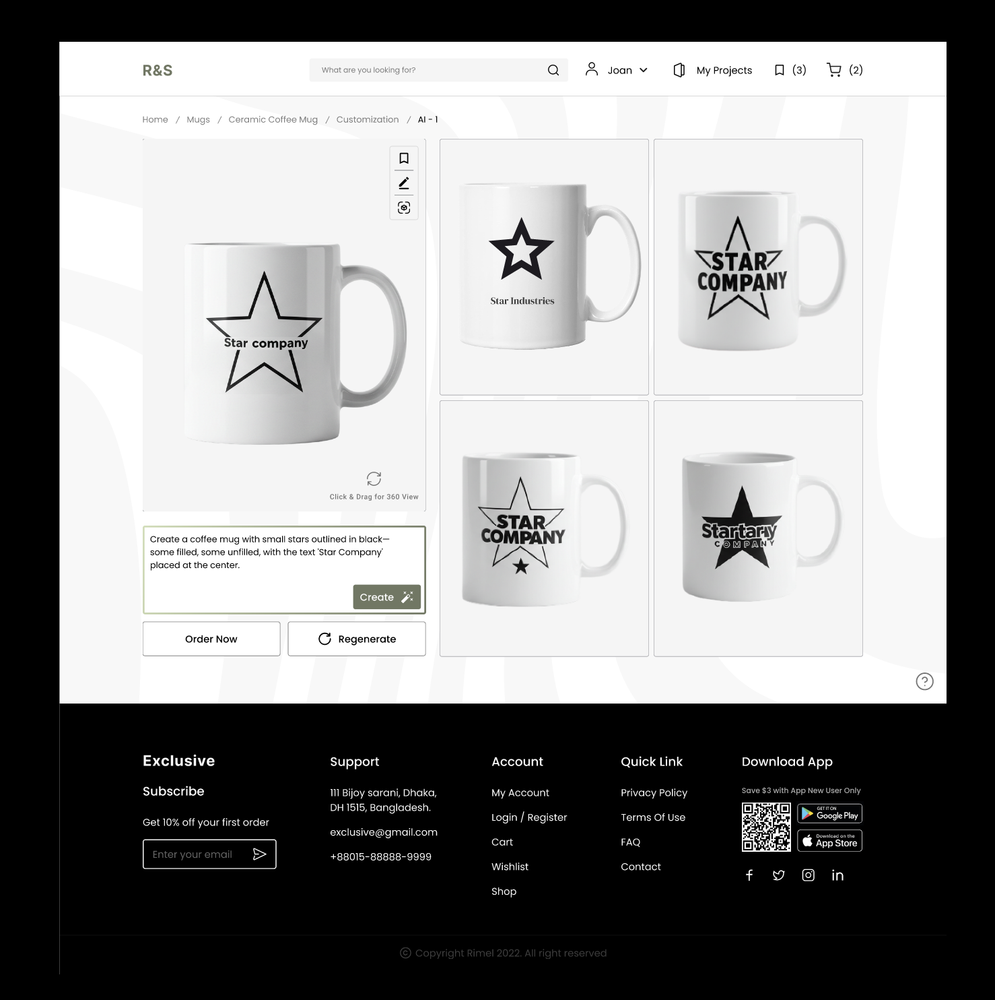
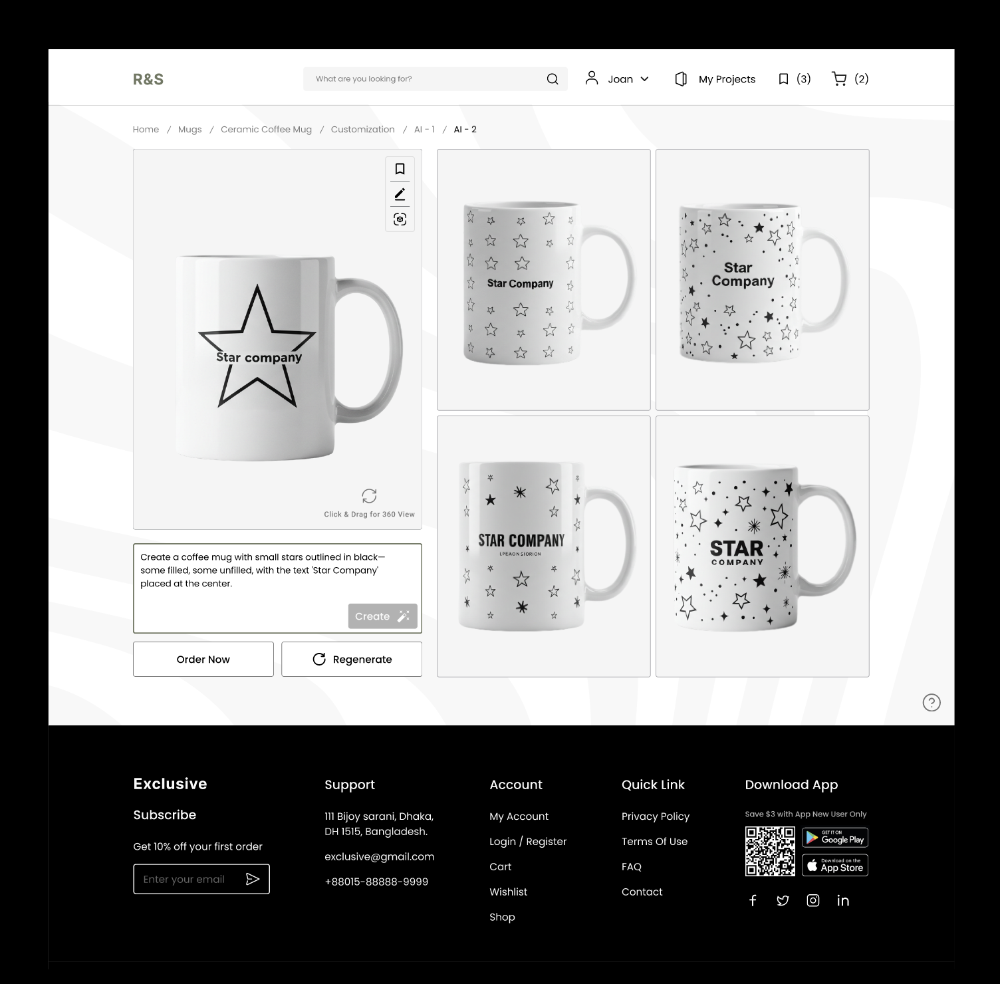
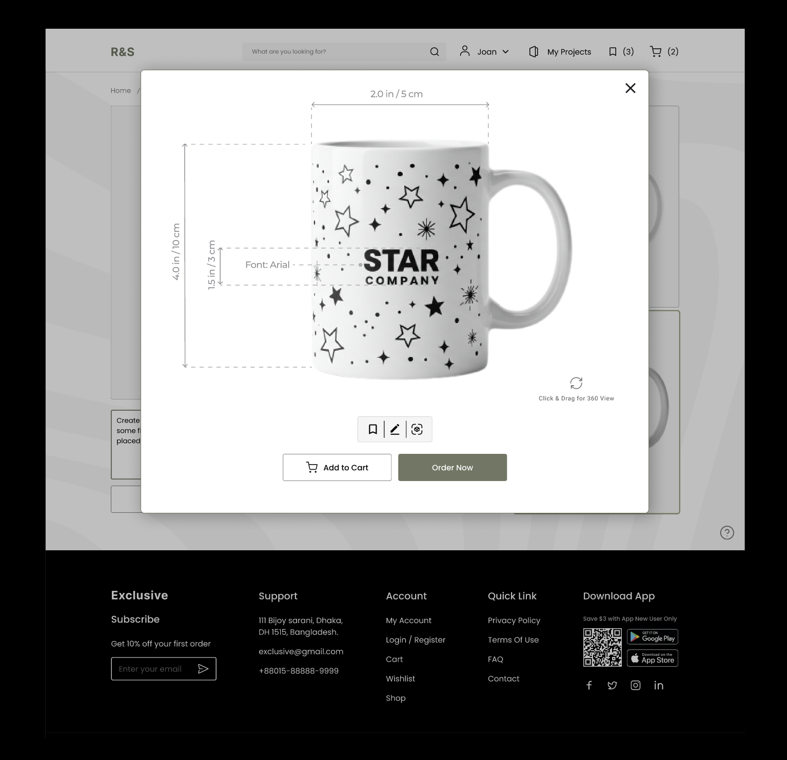
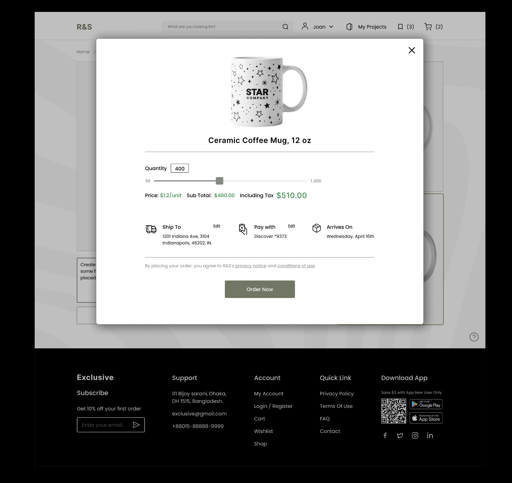
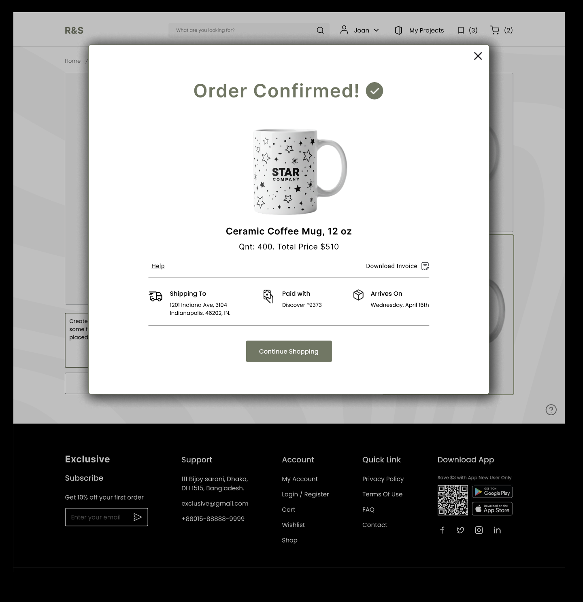

UX Engineering · B2B Web Platform · Client Project
Promptly is an AI-powered e-commerce platform I designed and engineered for Resource & Supply — a promotional products distributor — eliminating an email-dependent ordering process that was costing them time, accuracy, and sales.
01 · Overview
Resource & Supply's clients place promotional product orders — branded mugs, apparel, corporate swag — but the entire workflow happened over email. A Customer Service Representative would manually pick products, gather brand files, commission proofs, wait for approval, and loop back through revisions. Each cycle added days.
The result: an average turnaround of two weeks per order — not because of production, but because of an ordering process that had never been redesigned for modern expectations.
My role spanned the full stack: I contributed to UX research, led key areas of interaction design, and handled frontend engineering to bring the platform to life.
"As a customer placing a promotional product order, I want to ease the ordering process so I can avoid explaining changes over email and reviewing multiple proofs — but ordering through emails causes misunderstandings and delays."
02 · Research & Context
72% of B2B buyers now demand seamless online ordering. 90% prefer customized brand experiences. Yet 4imprint, Vistaprint, BAMKO, and HALO — the dominant players — still lack real-time proofing and interactive customization. The gap was clear.
Our primary persona, John Thompson, is a 40-year-old Sales Manager in Indiana. He orders promotional products regularly for corporate campaigns, is moderately tech-literate, and just wants accurate products delivered on time without the back-and-forth.
Proofs sent by email didn't match the sales order, leading to repeated revision cycles that delayed delivery and frustrated clients.
The emotional low point in the customer journey was proof review — where mismatched IP caused the entire cycle to restart from scratch.
CSRs manually curated a small set of product options, meaning customers rarely saw the full catalog or discovered new items.
Without live previews, what clients approved and what they received were sometimes meaningfully different — leading to costly dissatisfaction.
03 · Our Solution
We designed Promptly as an AI-powered e-commerce platform that eliminates the CSR from the ordering loop entirely — without losing the quality or accuracy clients need.
A familiar, Amazon-style storefront where clients browse the full product catalog, filter by category and price, and place orders without needing a CSR to curate options for them.
"The interface feels intuitive and familiar, almost like shopping on Amazon, which made navigation super easy for me."
Persistent customer profiles store past orders and brand preferences, enabling AI-driven reorder recommendations and eliminating repeat setup time for returning clients.
"I like the concept of revisiting my past orders and receiving personalized recommendations based on them."
Clients upload brand assets and the AI generates multiple proof variants automatically — starting with popular options, then offering advanced and fully custom AI-suggested designs.
"AI-driven customizations showed me different variations, something I wouldn't have even bothered to check out."
Real-time AR and 360° views let clients see exactly what their branded product will look like before ordering — eliminating the approval cycle that was costing everyone weeks.
"Seeing a live preview of the product with my logo made it so much easier to finalize my decision."
03.5 · User Journey Walkthrough
Every screen in the flow was designed to eliminate a specific friction point from the old email-based process. Click any screen to expand it.

A familiar e-commerce homepage replaces the CSR-curated email. Clients can browse by category and discover products they'd never have known to ask for.

Clients drag and drop their logo directly onto a live product preview, pick a color, and set quantity with a price that auto-calculates. No file emails, no back-and-forth on specs.

The editor shows exact printable dimensions on a 3D product canvas. Clients can switch between Text, Colors, Images, Shapes, 3D View, and AR Preview — full creative control without needing a design background.


The client types a natural language prompt and the AI generates four proof variants instantly. A 360° drag view lets them inspect every angle before deciding.

Not happy with the first round? Hit Regenerate. The AI produces an entirely new set of variants. What used to take a week of email rounds now takes seconds.

Before committing, clients can expand any proof to see exact print dimensions annotated directly on the product. This single screen replaces the embellisher proof email — the most frustrating step in the old journey.

A clean order modal surfaces everything at once — quantity, live price, shipping address, payment method, and estimated arrival. No surprises, no separate confirmation emails.

Order placed. No follow-up email needed, no CSR loop to close. The client has a confirmed order, a delivery date, and an invoice — all self-served in under 10 minutes.
04 · Design & Engineering Process
We mapped the full ordering journey across six touchpoints. The map revealed the emotional low point was proof review from the embellisher — where mismatch with approved IP caused frustration and delays. This became the primary design target.
We benchmarked 4imprint, Vistaprint, BAMKO, and HALO. All four excel at product variety but none offer real-time proofing, live AR previews, or AI-driven design suggestions. We identified this as Promptly's core differentiator.
We designed around three customer types: the time-pressed buyer, the hands-on customizer, and the creative power user. This tiered approach ensured no user felt overwhelmed while still offering depth for those who wanted it.
I helped design the full system architecture: mobile camera sensors for AR spatial data, internet & mobile network transmission via HTTPS/REST APIs/WebSockets, AWS cloud for product catalogs, AI model hosting, and security management.
I led frontend development, building the e-commerce storefront, product customization interface, and proof preview components. The goal was a familiar, fast, and intuitive experience that required no training for end users.
We packaged the full solution — market research, user research, business model canvas, SWOT analysis, and revenue model — into a pitch delivered to Resource & Supply stakeholders.
05 · Technical Architecture
| Layer | Technology | Purpose |
|---|---|---|
| Sensors | Mobile Phone Camera | Captures spatial data for real-world AR product previews |
| Communication | Internet & Mobile Network | Transmits data between client device and AWS backend |
| Protocols | HTTPS · REST APIs · WebSockets | Secure, real-time data transfer and proof updates |
| Cloud | AWS | Hosts product catalogs, user data, generated proofs, AI models, and security |
| Catalog | ASI's API + SAGE / ESP / CommonSKU | Sources promotional product inventory from distributor networks |
| Frontend | React · Shopify / CommonSKU | Self-service e-commerce storefront with embedded AI features |
06 · Business Model
Promptly creates value in two directions: directly for R&S clients through the e-commerce platform, and horizontally for other distributors through an AI proof generation API.
Primary — E-Commerce Sales
The Shopify or CommonSKU storefront generates revenue from direct promotional product sales. AI personalization improves conversion rates and increases average order value as users discover new products and variations.
Secondary — SaaS Subscription (API Access)
Other promotional product distributors can license Promptly's AI proof generation tool via a tiered monthly subscription:
07 · Validation
"The self-service model doesn't remove the human from the process — it removes the friction. CSRs get their time back. Clients get their autonomy back."
08 · Outcomes & Reflection
Being involved in both research and frontend development meant I understood the "why" behind every UI decision. That context made my engineering choices better — not just technically, but experientially.
B2B users have the same expectations as consumers. John Thompson doesn't want a clunky portal — he wants Amazon. Designing for that insight changed how I approached every screen.
Designing the IoT ecosystem taught me to think beyond the interface — how data flows, where latency affects UX, and how backend decisions shape what's possible on the frontend.
Usability testing with actual R&S clients, A/B testing the proof generation flow, and measuring real order turnaround times post-launch to validate the 37% sales projection against actual data.